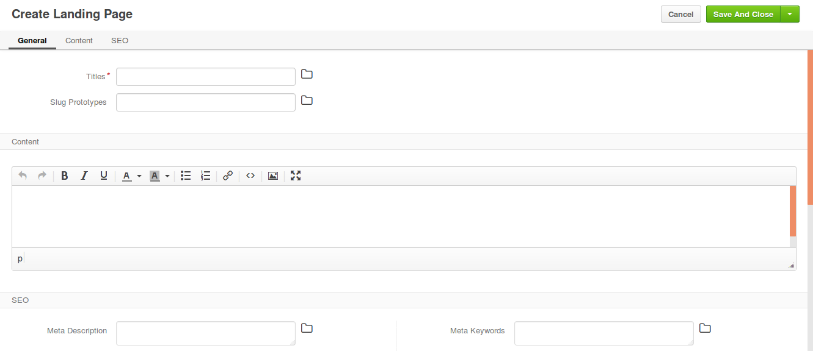

Landing Pages¶
This topic contains the following sections:
Overview¶
Landing page is a marketing tool that generates interest and leads for your sales pipeline and has a distinct call to action with a single focused objective.
In a landing page, you can:
- Describe a service or product in a compelling way that leads to the informed buying decision and moves your customer one step closer to the purchase.
- Share a promo (e.g. use a promo code to get 10% discount off the Winter items).
- Offer an ebook download, webinar registration, or notification of a new product line launch in exchange to registering an account in your eCommerce website.
Create a Landing Page¶
To create a new Landing Page:
Navigate to Marketing > Landing Pages in the main menu.
Click Create Landing Page. The following page opens:
Fill in the landing page title (Titles) and translate it into the languages supported in your OroCommerce configuration.
To manage title translations, click next to the Titles box and follow the guidance here).
Click on the Slug Prototypes box. The default slug prototype will be autogenerated. Edit the value to customize the default.
To ensure that slug prototype translation is localization-friendly, manage slug prototype translations: click next to the Slug Prototypes box and follow the guidance here).
Enter the landing page content in the WYSIWYG text editor or use the source code mode (<>) to enter the html code.
In the SEO section, manage the meta description and meta keywords that will be incapsulated in the landing page.
Meta information helps search engines index and display the landing page in the search results when it becomes relevant.
Meta description would summarize the page contents in one or several sentences (~160 characters).
Meta keywords are comma separated words and phrases that describes the content in the most precise and relevant way that help find the page via the search engines (e.g. Google, Yahoo, Bing, etc.)
Once you have completed editing the new landing page details, click Save on the top right of the page.
The new landing page is created and is available by the following URL:
1 | <OroCommerce application URL>/<slug prototype>/
|
For example, http://acme.orocommerce.com/online-webinar-jan2017/
Next steps
Use the landing page URL in your marketing activities (email campaigns, advertisement, etc).
View and Filter Landing Pages¶
To view all Landing Pages, navigate to Marketing > Landing Pages in the main menu.
Preview:

You can perform the following actions at the All Landing Pages page:
Create Landing Page: Click Create Landing Page to the top right from the list.
Bulk delete landing pages: In a bulk select to the top left, select one of the following options: All, All Visible, None. On the top right of the list (grid), click bulk more actions menu and click the to remove all selected landing pages.
View landing page details and preview: Click on the item to open its details page.
OR
Alternatively: Hover over the more actions menu to the right of the item and click the to open its details page.
Delete a landing page: Hover over the more actions menu to the right of the item and click the to remove the landing page.
Edit a landing page: Hover over the more actions menu to the right of the item and click the to start editing its details.
Filter landing pages by ID or Title.
View Landing Page Details¶
To view a Landing Page details:
Navigate to Marketing > Landing Pages in the main menu.
Find the line with the necessary Landing Page and click on it.
The following information is available immediately:
- Title
- Slug Prototypes
- Content preview
- SEO information: meta description and meta keywords
Next steps
You can do the following changes to the landing page in edit mode (click Edit on the top right of the page to get there).
- Update content
- Edit meta information
- Change slug prototypes and their translation
- Update landing page title
Edit a Landing Page¶
To edit the Landing Page title, slug prototypes, content or meta information:
Navigate to Marketing > Landing Pages in the main menu.
Hover over the more actions menu to the right of the item and click the to start editing its details. The following page opens:
Update the necessary information.
Click Save on the top right of the page.
The Landing Page is updated.